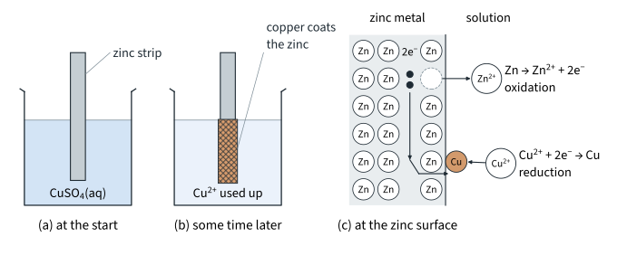
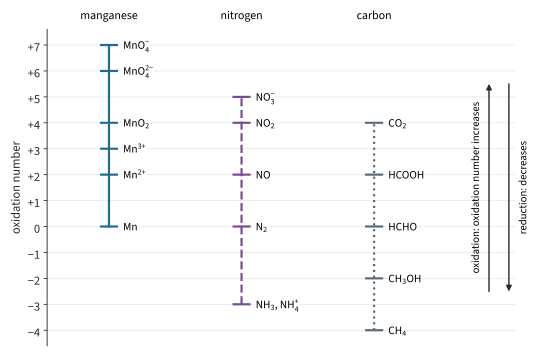

Electrochemistry 1
Topic 12 · Electrochemistry Part 1
On this page
Introduction
Redox reactions are everywhere: the battery in your phone, the rusting of an iron railing, the respiration that keeps you alive, and the KMnO4 and iodine-thiosulfate titrations of Topic 6. In Topic 6 the ionic equations for redox titrations were given to you, and in Topic 5 you read E⦵ values from the Data Booklet to explain why chlorine displaces bromine. This topic fills in the chemistry behind both.
This Part is about describing redox: oxidation numbers, oxidising and reducing agents, half-equations, and how to put two half-equations together into a balanced redox equation. Part 2 measures how strongly a species gains electrons (electrode potentials) and uses that to build cells and predict reactions. Part 3 runs the process the other way: electrolysis uses electricity to force a reaction that would not happen by itself.
Key terms
You will use these terms throughout the topic.
| Term | Meaning |
|---|---|
| Oxidation | Loss of electrons; an increase in oxidation number. |
| Reduction | Gain of electrons; a decrease in oxidation number. |
| Redox reaction | A reaction in which oxidation and reduction take place together: the electrons lost by one species are gained by another. |
| Oxidising agent | A species that oxidises another species and is itself reduced (an electron acceptor), e.g. MnO4−, Cl2. |
| Reducing agent | A species that reduces another species and is itself oxidised (an electron donor), e.g. Zn, Fe2+. |
| Oxidation number | The charge an atom would have if all its bonds were ionic, with the bonding electrons given to the more electronegative atom. Also called oxidation state. |
| Half-equation | An equation for the oxidation or the reduction on its own, with the electrons written in, e.g. Fe2+ → Fe3+ + e−. |
| Disproportionation (Further example) | A redox reaction in which the same element is both oxidised and reduced, e.g. chlorine with cold sodium hydroxide. |
Oxidation and reduction
There are three ways to describe oxidation and reduction. They grew up one after another, and each covers more reactions than the one before.
| Description | Oxidation | Reduction |
|---|---|---|
| Oxygen (historical) | gain of oxygen | loss of oxygen |
| Hydrogen (historical) | loss of hydrogen | gain of hydrogen |
| Electron transfer | loss of electrons | gain of electrons |
| Oxidation number | increase in oxidation number | decrease in oxidation number |
The first two still turn up in organic chemistry, where [O] and [H] stand for the oxidising and reducing agent (Topics 11.6 and 11.7). For everything else, use the last two. A memory aid: OIL RIG, Oxidation Is Loss, Reduction Is Gain (of electrons).
Zinc in copper(II) sulfate solution
Put a strip of zinc into blue copper(II) sulfate solution. The zinc becomes coated with a brown deposit of copper, the blue colour fades, and the solution warms up (Topic 7 Part 1 measured ΔH for this reaction). Fig 1 shows what happens at the zinc surface.

The ionic equation (the sulfate ions are spectators):
Zn(s) + Cu2+(aq) → Zn2+(aq) + Cu(s)
Split it into two half-equations, one for each change:
Zn(s) → Zn2+(aq) + 2e− oxidation: zinc loses electrons
Cu2+(aq) + 2e− → Cu(s) reduction: copper(II) ions gain electrons
Look at it the other way, through oxidation numbers: zinc goes from 0 to +2 (an increase, so oxidation) and copper from +2 to 0 (a decrease, so reduction). Both descriptions give the same answer, as they must. The two electrons lost by each zinc atom are exactly the two gained by each Cu2+ ion: in a redox reaction, electrons lost = electrons gained.
Zinc has caused the reduction of Cu2+, so zinc is the reducing agent; Cu2+ has caused the oxidation of zinc, so Cu2+ is the oxidising agent. Notice the cross-over: the reducing agent is itself oxidised.
Oxidation numbers
For simple ions it is obvious which species has lost electrons. For MnO4− or Cr2O72− it is not, because the atoms are held together by covalent bonds. Oxidation numbers are the bookkeeping that makes it work: the oxidation number of an atom is the charge it would have if every bond to it were ionic, with the bonding electrons given to the more electronegative atom. Topic 5 Part 2 used four of the rules to compare the oxides and chlorides of Period 3; here is the full set.
| Rule | Examples |
|---|---|
| 1. An atom in an element has oxidation number 0. | Na, Cl2, O2, S8: all 0 |
| 2. A monatomic ion has the oxidation number of its charge. | Na+ +1; Fe3+ +3; Cl− −1; O2− −2 |
| 3. The oxidation numbers in a compound add up to 0; in an ion they add up to the charge on the ion. | SO42−: S + 4(−2) = −2, so S = +6 |
| 4. Fluorine is −1 in all its compounds. | HF, OF2 |
| 5. Oxygen is −2, except in peroxides (−1) and in OF2 (+2). | H2O −2; H2O2 −1; OF2 +2 |
| 6. Hydrogen is +1, except in metal hydrides (−1). | HCl +1; NaH −1 |
| 7. Group 1 metals are +1, Group 2 metals +2 and aluminium +3 in their compounds. | K2O, CaCl2, Al2O3 |
| 8. Chlorine is −1, except in compounds with oxygen or fluorine. | NaCl −1; ClO− +1; ClO3− +5 |
When two rules clash, the one higher in the list wins: in OF2, fluorine (rule 4) beats oxygen (rule 5). Work out the atoms whose oxidation numbers you know first, then find the one you do not from rule 3.
Worked example 1
Find the oxidation number of (a) Mn in MnO4−, (b) Cr in Cr2O72−, (c) N in NH4+ and in NO3−, (d) S in S2O32− and in S4O62−.
(To answer each part, you have to use rule 3: the oxidation numbers add up to the charge on the ion.)
(a) Mn + 4(−2) = −1 Mn = +7
(b) 2Cr + 7(−2) = −2 Cr = +6
(c) N + 4(+1) = +1, N = −3 in NH4+ N + 3(−2) = −1, N = +5 in NO3−
(d) 2S + 3(−2) = −2, S = +2 in S2O32− 4S + 6(−2) = −2, S = +2.5 in S4O62−
A fractional oxidation number such as +2.5 is an average over the atoms of that element.1 It works perfectly well for balancing equations.
Carbon in organic compounds
The same rules work for carbon. In methanol, CH3OH, the four H atoms are +1 each and the O atom is −2, so C + 4(+1) + (−2) = 0 and C = −2. Follow methanol as it is oxidised step by step:
| Compound | CH3OH | HCHO | HCOOH | CO2 |
|---|---|---|---|---|
| Oxidation number of C | −2 | 0 | +2 | +4 |
Each step is an oxidation: the oxidation number of carbon rises by 2, so each step removes two electrons. That is what [O] stands for in Topics 11.6 and 11.7. Later in this Part you will write proper half-equations for these steps instead. Fig 2 collects the oxidation numbers of manganese, nitrogen and carbon in the species you will meet most often.

Naming with oxidation numbers
Where an element can have more than one oxidation number, the name gives it in Roman numerals: iron(II) sulfate, FeSO4; iron(III) chloride, FeCl3. Oxoanions end in "-ate" with the Roman numeral of the central atom:
| Ion | Name | Oxidation number |
|---|---|---|
| MnO4− | manganate(VII) | Mn +7 |
| MnO42− | manganate(VI) | Mn +6 |
| Cr2O72− | dichromate(VI) | Cr +6 |
| CrO42− | chromate(VI) | Cr +6 |
| ClO− | chlorate(I) | Cl +1 |
| ClO3− | chlorate(V) | Cl +5 |
So KMnO4 is potassium manganate(VII) and K2Cr2O7 is potassium dichromate(VI). Household bleach is a solution of sodium chlorate(I), NaClO.
Recognising redox reactions
To decide whether a reaction is redox, work out the oxidation number of every element on both sides. If any changes, it is redox; if none does, it is not.
Worked example 2
Which of these reactions are redox? For each redox reaction, name the oxidising agent and the reducing agent.
- Ag+(aq) + Cl−(aq) → AgCl(s)
- 2CrO42−(aq) + 2H+(aq) ⇌ Cr2O72−(aq) + H2O(l)
- Mg(s) + 2HCl(aq) → MgCl2(aq) + H2(g)
- NaOH(aq) + HCl(aq) → NaCl(aq) + H2O(l)
(a) Ag stays +1 and Cl stays −1: not redox. It is a precipitation.
(b) Cr is +6 in both CrO42− and Cr2O72−; O stays −2 and H stays +1: not redox, even though the colour changes from yellow to orange. Adding acid simply converts one chromium(VI) ion into the other.
(c) Mg goes from 0 to +2 (oxidised) and H from +1 to 0 (reduced): redox. The oxidising agent is H+ (from the HCl) and the reducing agent is Mg. Chlorine stays −1: Cl− is a spectator ion.
(d) No oxidation number changes: not redox. It is a neutralisation.
So a colour change does not prove redox, and neither does a change of partner. Only a change of oxidation number does.
Disproportionation (Further example)
Sometimes the same element is both oxidised and reduced. This is disproportionation. Chlorine does it in cold, dilute sodium hydroxide:
Cl2(g) + 2NaOH(aq) → NaCl(aq) + NaClO(aq) + H2O(l) (cold, dilute)
Chlorine goes from 0 to −1 in NaCl (reduced) and from 0 to +1 in NaClO (oxidised). This is how bleach is made; Part 3 shows where the chlorine and the sodium hydroxide come from. In hot, concentrated alkali the chlorate(I) disproportionates further, and the overall reaction is
3Cl2(g) + 6NaOH(aq) → 5NaCl(aq) + NaClO3(aq) + 3H2O(l) (hot)
with chlorine going from 0 to −1 and to +5. Count the electrons: five Cl atoms each gain one electron (5e− in all) and one Cl atom loses five. Copper(I) ions disproportionate in water too, which is why copper(I) sulfate is not stable in aqueous solution (Part 2 shows why with E⦵ values):
2Cu+(aq) → Cu(s) + Cu2+(aq)
Writing half-equations
Most of the redox reactions you will meet involve oxoanions in acid, such as MnO4− or Cr2O72−, and their half-equations are not obvious. Use this method, which always works in acidic solution:
Worked example 3: manganate(VII) to manganese(II)
Write the half-equation for the reduction of manganate(VII) ions to manganese(II) ions in acid.
Step 1: MnO4− → Mn2+ (one Mn on each side already)
Step 2: MnO4− → Mn2+ + 4H2O
Step 3: MnO4− + 8H+ → Mn2+ + 4H2O
Step 4: charge on the left (−1) + 8(+1) = +7; on the right +2; add 5e− to the left
MnO4−(aq) + 8H+(aq) + 5e− → Mn2+(aq) + 4H2O(l)
Check: Mn goes from +7 to +2, a change of 5 for one Mn atom, and there are 5 electrons.
Worked example 4: dichromate(VI) to chromium(III)
Write the half-equation for the reduction of dichromate(VI) ions to chromium(III) ions in acid.
Step 1: Cr2O72− → 2Cr3+
Step 2: Cr2O72− → 2Cr3+ + 7H2O
Step 3: Cr2O72− + 14H+ → 2Cr3+ + 7H2O
Step 4: charge on the left (−2) + 14(+1) = +12; on the right 2(+3) = +6; add 6e− to the left
Cr2O72−(aq) + 14H+(aq) + 6e− → 2Cr3+(aq) + 7H2O(l)
Check: two Cr atoms each change from +6 to +3, so 2 × 3 = 6 electrons. (To get step 1 right, you have to balance the chromium before anything else: forgetting the 2 in front of Cr3+ is the commonest mistake.)
More half-equations
The same four steps give all of these. Cover the middle column and try them.
| Change | Half-equation | Electron check |
|---|---|---|
| Fe2+ → Fe3+ | Fe2+ → Fe3+ + e− | 1 Fe, +2 → +3: 1 |
| C2O42− → CO2 | C2O42− → 2CO2 + 2e− | 2 C, +3 → +4: 2 |
| H2O2 → O2 | H2O2 → O2 + 2H+ + 2e− | 2 O, −1 → 0: 2 |
| H2O2 → H2O | H2O2 + 2H+ + 2e− → 2H2O | 2 O, −1 → −2: 2 |
| S2O32− → S4O62− | 2S2O32− → S4O62− + 2e− | 4 S, +2 → +2.5: 2 |
| IO3− → I2 | 2IO3− + 12H+ + 10e− → I2 + 6H2O | 2 I, +5 → 0: 10 |
| I− → I2 | 2I− → I2 + 2e− | 2 I, −1 → 0: 2 |
| Cu2+ → CuI | Cu2+ + I− + e− → CuI | 1 Cu, +2 → +1: 1 |
| CH3CH2OH → CH3CHO | CH3CH2OH → CH3CHO + 2H+ + 2e− | C bonded to O, −1 → +1: 2 |
Hydrogen peroxide appears twice: it can be oxidised (to O2) or reduced (to H2O), so it can act as a reducing agent or as an oxidising agent, depending on what it meets. In the ethanol half-equation, find the oxidation number of the carbon bonded to oxygen the same way as for methanol, counting the other carbon as 0: it goes from −1 in ethanol to +1 in ethanal. This half-equation is the one hidden in CH3CH2OH + [O] → CH3CHO + H2O (Topic 11.6).
Half-equations in alkaline solution (Further example)
In alkaline solution there is almost no H+. Balance as if in acid, then add the same number of OH− ions to both sides to turn every H+ into H2O, and cancel any water that appears on both sides. For manganate(VII) going to manganese(IV) oxide:
in acid: MnO4− + 4H+ + 3e− → MnO2 + 2H2O
add 4OH− to both sides: MnO4− + 4H2O + 3e− → MnO2 + 2H2O + 4OH−
cancel 2H2O: MnO4−(aq) + 2H2O(l) + 3e− → MnO2(s) + 4OH−(aq)
Constructing redox equations
A full redox equation has no electrons in it: every electron released by the reducing agent is taken by the oxidising agent. So:
Worked example 5: manganate(VII) and iron(II)
Construct the equation for the reaction of acidified manganate(VII) ions with iron(II) ions. This is the reaction of the KMnO4 titrations in Topic 6 Part 2.
MnO4− + 8H+ + 5e− → Mn2+ + 4H2O (× 1)
Fe2+ → Fe3+ + e− (× 5)
(To make the electrons equal, you have to multiply the iron half-equation by 5.) Adding, and cancelling 5e−:
MnO4−(aq) + 5Fe2+(aq) + 8H+(aq) → Mn2+(aq) + 5Fe3+(aq) + 4H2O(l)
Check: charge on the left (−1) + 5(+2) + 8(+1) = +17; on the right (+2) + 5(+3) = +17. The mole ratio MnO4− : Fe2+ is 1 : 5.
Worked example 6: dichromate(VI) and iron(II)
Cr2O72− + 14H+ + 6e− → 2Cr3+ + 7H2O (× 1)
Fe2+ → Fe3+ + e− (× 6)
Cr2O72−(aq) + 6Fe2+(aq) + 14H+(aq) → 2Cr3+(aq) + 6Fe3+(aq) + 7H2O(l)
Check: charge (−2) + 6(+2) + 14(+1) = +24 on the left; 2(+3) + 6(+3) = +24 on the right. Ratio Cr2O72− : Fe2+ = 1 : 6.
Worked example 7: manganate(VII) and ethanedioate
Here neither half-equation is a simple multiple of the other: 5 electrons against 2. (To make them equal, you have to go to the lowest common multiple, 10.)
2MnO4− + 16H+ + 10e− → 2Mn2+ + 8H2O (× 2)
5C2O42− → 10CO2 + 10e− (× 5)
2MnO4−(aq) + 5C2O42−(aq) + 16H+(aq) → 2Mn2+(aq) + 10CO2(g) + 8H2O(l)
Ratio MnO4− : C2O42− = 2 : 5. (This titration is slow at room temperature and is done warm, at about 60 °C; Part 2 explains why E⦵ values cannot tell you that.)
Worked example 8: manganate(VII) and hydrogen peroxide
Here H2O2 is the reducing agent: it is oxidised to oxygen.
2MnO4− + 16H+ + 10e− → 2Mn2+ + 8H2O (× 2)
5H2O2 → 5O2 + 10H+ + 10e− (× 5)
(To get the final equation, you have to cancel 10H+ from both sides: there are 16 on the left and 10 on the right, so 6 are left on the left.)
2MnO4−(aq) + 5H2O2(aq) + 6H+(aq) → 2Mn2+(aq) + 5O2(g) + 8H2O(l)
Check: charge (−2) + 6(+1) = +4 on the left; 2(+2) = +4 on the right.
More equations built the same way
The first three are the iodine titrations of Topic 6 Part 2, where the equations were given to you. The last is the oxidation of ethanol by acidified potassium dichromate(VI), the orange to green change of Topic 11.6.
| Reaction | Half-equations (and multipliers) | Redox equation |
|---|---|---|
| IO3− with I−, in acid | 2IO3− + 12H+ + 10e− → I2 + 6H2O; 2I− → I2 + 2e− (× 5); then divide by 2 | IO3− + 5I− + 6H+ → 3I2 + 3H2O |
| Cu2+ with I− | Cu2+ + I− + e− → CuI (× 2); 2I− → I2 + 2e− | 2Cu2+ + 4I− → 2CuI + I2 |
| I2 with S2O32− | I2 + 2e− → 2I−; 2S2O32− → S4O62− + 2e− | I2 + 2S2O32− → 2I− + S4O62− |
| CH3CH2OH with Cr2O72−, in acid | Cr2O72− + 14H+ + 6e− → 2Cr3+ + 7H2O; CH3CH2OH → CH3CHO + 2H+ + 2e− (× 3) | 3CH3CH2OH + Cr2O72− + 8H+ → 3CH3CHO + 2Cr3+ + 7H2O |
In the ethanol equation, 14 H+ are used and 6 are released, so 8 are left on the left after cancelling.
Balancing by oxidation-number change (Further example)
An alternative to half-equations, handy when you can see the oxidation numbers quickly: the total increase in oxidation number must equal the total decrease. For MnO4− + Fe2+, Mn goes from +7 to +2 (a decrease of 5) and Fe goes from +2 to +3 (an increase of 1), so 5Fe2+ are needed for each MnO4−. Then balance O with H2O (4H2O on the right) and H with H+ (8H+ on the left), and you have the same equation as worked example 5.
Worked example 9: a titration
25.0 cm3 of a hydrogen peroxide solution, acidified with dilute sulfuric acid, needs 20.00 cm3 of 0.0200 mol dm−3 potassium manganate(VII) to reach the end point. Calculate the concentration of the hydrogen peroxide.
(To answer this, you need the mole ratio, so you have to build the equation first: worked example 8 gives 2MnO4− : 5H2O2.)
n(MnO4−) = 0.0200 × (20.00 / 1000) = 4.000 × 10−4 mol
n(H2O2) = (5 / 2) × (4.000 × 10−4) = 1.000 × 10−3 mol
[H2O2] = (1.000 × 10−3) / (25.0 / 1000) = 0.0400 mol dm−3
The end point is the first permanent pale pink, exactly as in Topic 6: no indicator is needed.
Summary
The ideas of this Part in one table.
| Idea | Key points |
|---|---|
| Oxidation and reduction | Oxidation: loss of electrons, increase in oxidation number. Reduction: gain of electrons, decrease in oxidation number (OIL RIG). Electrons lost = electrons gained. |
| Agents | The oxidising agent is reduced; the reducing agent is oxidised. |
| Oxidation numbers | Eight rules; they add up to 0 in a compound and to the charge in an ion. Fractions are averages. Names use Roman numerals: manganate(VII), dichromate(VI), chlorate(I). |
| Is it redox? | Only if an oxidation number changes. Precipitation, neutralisation and CrO42−/Cr2O72− are not redox. Disproportionation: one element both oxidised and reduced (Further example). |
| Half-equations (acid) | Balance the element, then O with H2O, H with H+, charge with e−. Electrons = change in oxidation number × atoms. In alkali, add OH− to both sides (Further example). |
| Redox equations | Multiply to equal electrons, add, cancel e−, H+ and H2O, check atoms and charge. Or match the total increase and decrease in oxidation number. |
Additional information
- Beyond the syllabus: the four S atoms in S4O62− are not all alike. The two outer S atoms each carry three oxygens and are +5; the two central S atoms are bonded only to sulfur and are 0; the average is (2 × 5 + 2 × 0) / 4 = +2.5. In the same way iron in Fe3O4 has an average oxidation number of +8/3, because the oxide contains one Fe2+ for every two Fe3+. ↩